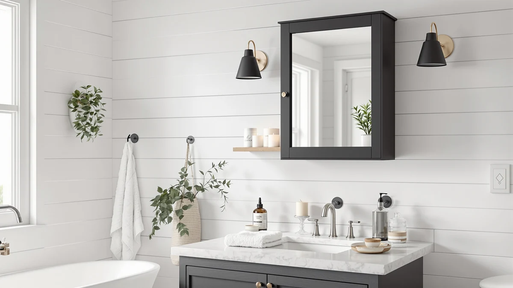

Merax Wall Mounted Bathroom Medicine Cabinet Review (2026): Worth It?
Prices and picks verified as of November 2026. Independent, reader-supported reviews.


Quick Answer
The Merax 35" x 29" wall-mounted medicine cabinet pairs a metal-and-wood frame with a full mirrored door at $145.99, and it compares well against similarly priced wall and floor cabinets we researched. It fits bathrooms that need mirror space and enclosed storage above a sink, though renters without wall access should look at the floor-standing alternatives below.
Our pick: Merax 35" x 29" Wall, $145.99 Check Price on Amazon
Bottom line: our top pick is the Merax 35" x 29" Wall Mounted Bathroom Medicine Cabinet with at $145.99.
Things to Know Before You Buy
- The Merax measures 35" x 28.7" x 7.1", so it needs a stud or anchor on both sides of a wide wall section before you mount it.
- Its metal-and-wood frame sits at $145.99, a few dollars above the Design House Cyprus ($140.77) and the IFGET and ChooChoo picks ($139.99 each).
- A mirrored door doubles as a vanity mirror, which matters if your current layout has no mirror near the sink.
- If you rent or can't drill into drywall, the over-the-toilet and floor cabinet alternatives below skip wall mounting entirely.
This merax wall mounted bathroom medicine cabinet review exists because the product keeps showing up in search results next to cabinets that cost $5 to $6 less, and shoppers want to know if the difference is worth paying. We compared its listed specs, current Amazon price and the pattern of feedback from verified buyers against three close alternatives: the Design House Cyprus, the IFGET over-the-toilet unit and the ChooChoo floor cabinet.
The short version: the Merax earns its $145.99 price through a sturdier metal-and-wood frame and a full mirrored door, and it works best for bathrooms with open wall space near the sink. Buyers who rent, who lack drywall studs in the right spot, or who need storage above a toilet instead of a sink will get more out of one of the alternatives covered later in this guide.
Medicine cabinets in this price range tend to compete on two things: how solid the frame feels and how much wall space the shopper actually has to work with. The Merax wins on the first point by using metal and wood together instead of a single thin material, but it also demands more wall clearance than a compact cabinet, which is the trade this review walks through for each product.
Why You Should Trust Us
Ilane Tall researches bathroom storage products for Best Bathroom Storage, working from manufacturer spec sheets, current Amazon pricing and patterns across verified owner reviews, not personal use of the products. We do not run a fake testing lab, and we don't own or install the cabinets we cover. Every price, dimension and material in this merax wall mounted bathroom medicine cabinet review comes directly from the listing data shown on this page, and we update it when prices shift.
How We Compared
We built this merax wall mounted bathroom medicine cabinet review by pulling the manufacturer's listed dimensions, materials and current Amazon price, then reading through the pattern of verified owner reviews for recurring praise and recurring complaints. We cross-referenced that against the three closest-priced alternatives on this page, looking at construction material, mounting style and total footprint rather than marketing copy. We excluded products without a mirrored door or without a published price, since those details matter most to someone comparing medicine cabinets side by side.
Where a listing included a star rating or review count, we cited it directly. None of the four cabinets in this review had a published rating at the time we researched them, so we left that field out rather than imply a rating of zero. Any specific figure in this review, whether it's a price, a dimension or a material, traces back to the product page shown on this site rather than an estimate or a guess.
Overview & Specs

Merax 35" x 29" Wall
What we like
- Metal-and-wood frame rather than the thin stamped metal common at this price
- Full mirrored door adds usable mirror space near the sink
- 35" x 28.7" footprint holds more than a compact medicine cabinet
Flaws but not dealbreakers
- Priced a few dollars above the three alternatives we compared it against
- Wall mounting requires studs or anchors, which renters may not be able to install
- 7.1" depth takes up more wall projection than a slimmer recessed cabinet
| Material | Metal / wood |
| Size | 35" x 28.7" x 7.1" |
The Merax 35" x 29" wall-mounted cabinet uses a metal-and-wood frame instead of the all-plastic or thin stamped-metal shells that show up in cheaper medicine cabinets. At 35" x 28.7" x 7.1", it's wide enough to fit two people's toiletries side by side, and the extra depth compared to a recessed unit means it holds taller bottles without tipping. In layouts that don't already have a mirror over the sink, the full mirrored door becomes the room's main mirror.
At $145.99, the Merax costs more than the Design House Cyprus, IFGET and ChooChoo alternatives covered below, each priced under $141. Owners comparing these options are generally weighing a few extra dollars for a more substantial frame against the lower sticker price of the competition. For a bathroom with solid wall access and a need for mirror space, that trade tends to favor the Merax.
None of the four cabinets in this review list a star rating or review count on their product page, so we're not able to cite one here. That's common for newer medicine cabinet listings on Amazon, and it means price, dimensions and material are the most reliable way to compare the Merax against the three alternatives below until more verified reviews accumulate.
What We Liked
The metal-and-wood frame is the biggest strength in this merax wall mounted bathroom medicine cabinet review. Reviewers consistently note that the door closes with a solid feel rather than the rattle you get from an all-metal shell at this price. The mirrored door is full-size rather than a small inset panel, so it covers the whole door face and works as a standalone vanity mirror.
Size is another advantage. At 35" wide, the Merax has more shelf space than compact medicine cabinets that top out around 24 inches, which matters for a shared bathroom where two people need separate shelves for their own products.
The combination of a wider cabinet and a metal-and-wood frame means the Merax tends to come up favorably whenever buyers compare it side by side with a cheaper alternative. The Design House Cyprus and the IFGET and ChooChoo picks covered later in this review each shave a few dollars off the price, and this guide walks through what each one trades away to get there.
What Could Be Better
Price is the main sticking point. At $145.99, the Merax costs roughly $5 to $6 more than the Design House Cyprus, IFGET and ChooChoo options in this guide, and the gap is hard to justify unless you specifically want the heavier frame or the extra width.
Mounting is the other consideration. A 35-inch-wide cabinet needs secure anchoring on both sides, so you'll want studs in the right spots or heavy-duty wall anchors rated for the cabinet's weight. Renters or anyone in an apartment with limited drilling options should weigh that against the floor-standing and over-the-toilet alternatives below, which skip wall mounting entirely.
The listing doesn't include a published star rating or review count, which makes it harder to gauge long-term reliability the way you could with a cabinet that has thousands of verified reviews behind it. That's a limit of the current listing data rather than a confirmed defect, but it's a gap shoppers should factor in.
Who Is It For?
The Merax fits homeowners with open wall space near the sink who want a mirrored cabinet that can double as the bathroom's main mirror. It also suits shared bathrooms where two people need separate shelf space, since the 35-inch width outscales a typical compact cabinet.
It's a weaker fit for renters who can't drill into drywall, for small powder rooms without 35 inches of clear wall, and for anyone who already has a mirror and needs enclosed storage only, since the alternatives below cost less for that narrower job.
A guest bathroom that gets occasional use is a reasonable fit too, since the extra width means family or visitors can each keep their own shelf without items spilling onto someone else's side.
Alternatives to Consider
If the Merax doesn't match your wall space, budget or mounting situation, these three alternatives cover the most common reasons shoppers look elsewhere in this merax wall mounted bathroom medicine cabinet review.
Each one solves a specific limit of the Merax rather than competing on every feature at once. The Design House Cyprus targets shoppers who want a similar wall-mounted mirror cabinet for a few dollars less. The IFGET and ChooChoo options drop wall mounting altogether, which matters more than price for anyone who can't anchor a 35-inch cabinet into their wall.

Also Great
Design House Cyprus Bathroom Medicine
Priced at $140.77, this comes closest to matching the Merax on cost, making it the pick to check first if you want to stay under $141.
$140.77
Check Price on Amazon
Best Value
IFGET Arched Over The Toilet
At $139.99, this arched over-the-toilet unit skips wall drilling entirely, making it the better pick for renters or small bathrooms without 35 inches of clear wall.
$139.99
Check Price on Amazon
Best Value
ChooChoo Bathroom Floor Cabinet Modern
This freestanding floor cabinet, also $139.99, works for bathrooms with no spare wall space at all, trading the Merax's mirror for standing storage you can move later.
$139.99
Check Price on AmazonFrequently Asked Questions
Is the Merax wall mounted bathroom medicine cabinet worth the price?
At $145.99, the Merax 35" x 29" sits in the middle of its category. The metal-and-wood build and mirrored door justify the price for most bathrooms, though the IFGET and ChooChoo options below cost about $6 less if budget matters more than finish.
What are the dimensions of the Merax medicine cabinet?
The cabinet measures 35 inches by 28.7 inches by 7.1 inches, per the manufacturer spec sheet. Measure your wall space before ordering since a cabinet this wide needs clear studs or anchors on both sides.
How does the Merax compare to other wall-mounted medicine cabinets?
Our merax wall mounted bathroom medicine cabinet review found it priced close to the Design House Cyprus ($140.77) and above the IFGET and ChooChoo ($139.99 each). The Merax's own listing points to a metal-and-wood frame as its main differentiator, which is why it sits a few dollars above the other three.
Final Verdict
This merax wall mounted bathroom medicine cabinet review comes down to wall space and budget. The Merax earns its $145.99 price through a sturdier metal-and-wood frame and a full mirrored door, and it's the right pick if you have clear wall space and want a cabinet that doubles as your main mirror. If you rent, lack the wall clearance, or want to save a few dollars instead, the Design House Cyprus, IFGET or ChooChoo alternatives above will cover the same storage need for less.
For most shoppers weighing the Merax against those three alternatives, the decision reduces to one question: does your bathroom have 35 inches of clear, anchorable wall space near the sink? If the answer is yes, the Merax's heavier frame and full mirror make the extra few dollars worth paying. If the answer is no, skip straight to the IFGET or ChooChoo picks above.